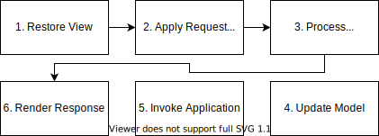

# Jakarta Server Faces
## Worum gehts?
* Web MVC Framework
* Component Based
* nutzt Facelets zur Darstellung
## Ziele
* Requestübergreifendes Management des States der UI Komponenten
* Stark typisiertes Eventmodel um serverseitig Client Events zu behandeln
* Kapselung der Unterschiede innerhalb der Clients und Browsern
## Ziele
* Handling der Navigation sowie Error und Exception Events
* Typ Konvertierung
* Validierung der Daten sowie entsprechendes Errorhandling
Abgrenzung zu JSP
- ist ein MVC Framework, welches zu dem ein Lifecycle enthält
- ermöglicht das dynamische Erzeugen von HTML Pages
- wird von JSF zur Darstellung verwendet
MVC
- Model View Controller Principle
- Wird von JSF beachtet
Prinzip
- Model: "Speicherort" der Daten
- View: ist für die Darstellung verantwortlich
- Controller: enthält die Steuerung der Anwendung
Nicht festgelegte Funktionalitäten
- Geschäftslogik
- Validierung der Benutzereingaben
- Formatierung
- Internationalisierung
MVC am Beispiel JSF
Lifecycle

Eigenschaften des Lifecycle
- nicht jede Phase muss durchlaufen werden
- Reihenfolge der Phase ist nicht veränderlich
Lifecycle: Initialer Aufruf
Lifecycle: Validation Error
Start Project
Voraussetzungen
- IDE (Empfehlung Intellij)
- Git
- Maven (je nach IDE)
- JDK 16 (je nach IDE)
Setup
- im IDE öffnen
- falls nicht automatisch maven install ausführen
- Main Class öffnen (Pfad: src/main/java/Main)
-
JDK auswählen
Ausführen
- In Main Class Funktion main ausführen
- Im Browser öffnen: localhost:8080
## JSF-Tags
Form
<h:form id="id">
...
</h:form>
Checkbox
<h:selectBooleanCheckbox value="#{item.done}"
disabled="true" />
Input Text
<h:inputText value="#{item.title}"/>
Input Hidden
<h:inputHidden value="#{item.title}"/>
Commandbutton
<h:commandButton value="Speichern"
action="#{manager.save()}"/>
Praxis
-
editiere die Datei
src/main/webapp/index.xhtml -
implementiere ein Formular mit folgenden Feldern:
- ID
- Titel
- Beschreibung
- Aktiv Checkbox
-
implementiere eine Übersichtstabelle mit folgenden Feldern:
- Titel
- Aktiv Status
## Beans
Beans definieren
-
Annotations:
- Zugriff über Klassenname mit kleinem Anfangsbuchstabe
@ManagedBean
@ViewScope
public class SayHello
-
Faces-config.xml:
- Zugriff über Attributwert managed-bean-name
<managed-bean>
<managed-bean-name>sayHello</managed-bean-name>
<managed-bean-class>demo.SayHello</managed-bean-class>
<managed-bean-scope>request</managed-bean-scope>
</managed-bean>
### Scopes
* Request Scope `RequestScoped`
* View Scope `ViewScoped`
* während der Nutzer auf dem gleichen View bleibt
* gilt auch über mehrere Page-Reloads
* Session `SessionScoped`
* gilt für die Session des Nutzers
* Application Scope `ApplicationScoped`
* Gilt über die komplette Laufzeit
### Baking Beans
* JSF ruft die Getter und Setter in jeder Phase neu auf
* unnötige Resourcenverschwendung
* Aufwendige Berechnungen oder Aufrufe externer Dienste aus Beans sind teuer
* Füge Baking Beans zwischen View und Logik ein
* Pufferung und Interpretation der Daten
Praxis
- Bean implementieren um die Formulardaten zu speichern
- Bean mit verschiedenen Scopes annotieren
-
verschiedene Aufrufe je Scope durchführen um Scopes zu testen
- Aufruf mit anderem Browser
- Aufruf mit anderem Fenster
- Neuladen der Seite
## Navigation
* explizit über in `faces-config.xml` definierte Regeln
* implizit wenn keine explizite Regel greift
### Navigation Rule (explizite Navition)
``` html[|2|3,7|4|5|6]
<navigation-rule>
<from-view-id>/login.xhtml</from-view-id>
<navigation-case>
<from-action>#{LoginForm.login}</from-action>
<from-outcome>success</from-outcome>
<to-view-id>/storefront.xhtml</to-view-id>
</navigation-case>
<navigation-case>
<to-view-id>/default.xhtml</to-view-id>
</navigation-case>
</navigation-rule>
```
### Implizite Navigation
Greift keine Navigation Regel dann wird der Rückgabewert der jeweiligen Action als relative URL genutzt.
Praxis
- Detailansicht zusätzlich implementieren
- Verlinkung aus Listenansicht mit der Detailansicht verknüpfen
- Formular nicht nur zum Anlegen nutzen sondern auch um das Editieren bestehender Einträge zu ermöglichen
## Validatoren
* Validatoren für Beans und Input Fields
* Standardvalidatoren für gängige Datentypen
* einfache Einschränkungen für Standard-Datentypen
* eigene komplexe Validatoren möglich
### Standardvalidatoren
```html
<f:validateLength minimum="6" maximum="15"/>
<f:validateLongRange minimum="6" maximum="15"/>
<f:validatePattern pattern="<myPattern>"/>
```
### Verwendung
```html
<h:inputText value="#{bean.variable}"
validator="validatorMethod()" />
<h:inputText value="#{bean.variable}">
<f:validateRequired/>
</inputText>
```
## Konverter
* Validatoren für Beans und Input Fields
* Konverter für gängige Datentypen
* BooleanConverter, BigIntegerConverter, DateTimeConverter etc.
### Verwendung
* wird automatisch zugeordnet durch den Typ der Beanvariable
```
<h:inputText value="#{bean.variable}"/>
```
Praxis
- Nutze einen Validator um sicherzustellen, dass im Titel Feld Text vorhanden ist.
JDBC Integration
Wofür JDBC?
- Daten extern speichern
- Daten sind nach Restart noch verfügbar
- Datenbanken sind effizienter als bspw. Datei Persistierung
Maven Dependency
pom.xml
```html
<dependencies>
...
<dependency>
<groupId>postgresql</groupId>
<artifactId>postgresql</artifactId>
<version>9.1-901.jdbc4</version>
</dependency>
...
</dependencies>
```
Verbindungsaufbau
``` Java [|2|3|4|5|7,10,12|8|11|13]
public Connection getConnection() {
Connection con = null;
String url = "jdbc:postgresql://localhost/testdb";
String user = "user1";
String password = "user1";
try {
con = DriverManager.getConnection(url, user, password);
System.out.println("Connection completed.");
} catch (SQLException ex) {
System.out.println(ex.getMessage());
}
return con;
}
```
Save Statement ausführen
```Java [|1|2,9,10,11|3,4,5|6,7|8|]
Connection con = this.getConnection();
try{
PreparedStatement stmt = con.prepareStatement(
"INSERT INTO todo(title,description) VALUES(?,?);"
);
stmt.setString(1, this.getTitle());
stmt.setString(2, this.getDescription());
int result = stmt.executeUpdate(); /* 1=>success */
} catch (Exception ex) {
System.out.println(ex.getMessage());
}
```
Read Statement ausführen
```Java [|1|2,15,16,17|3,4,5|6|8|9,14|10|4,11,12|13|]
Connection con = this.getConnection();
try{
PreparedStatement stmt = con.prepareStatement(
"SELECT `title`,`description` FROM todo;"
);
ResultSet result = stmt.executeUpdate();
List<Todo> records = new ArrayList();
while(rs.next()) {
Todo todo = new Todo();
todo.setTitle(rs.getString(1));
todo.setDescription(rs.getString(2));
records.add(todo);
}
} catch (Exception ex) {
System.out.println(ex.getMessage());
}
```
Praxis
- Speichere die Todos in der Datenbank.
Ausblick
Ajax
- Partial Loading
- Asynchron
- normalerweise nur einmal UI danach lediglich Austausch der Daten
- eigenes JSF Tag
Event Handling
- Ereignisse treten an verschiedene Stellen auf
- Eventhandler reagieren auf die Events
- ermöglicht auf Zustandsänderungen zu reagieren
Internationalisierung (i18n)
- Produkte ohne (oder nur kleine) Anpassung für mehrere Märkte nutzbar
- Weniger Frage des Frameworks als mehr Frage der UI Gestaltung
- Bspw. Icons prägen, genug Platz für unterschiedliche Sprachen
Lokalisierung
- Anpassen an spezielle Länder/Marktspezifische Verhalten
- Hier kann das Framework bspw. mit der Unterstützung von verschiedenen Sprachen helfen.
- Bspw. Sprachswitches oder Leserichtung
Erste Ausgabe
<!DOCTYPE html>
<html lang="de" xmlns="http://www.w3.org/1999/xhtml"
xmlns:f="http://java.sun.com/jsf/core"
xmlns:h="http://java.sun.com/jsf/html">
<head>
<meta charset="UTF-8"/>
<title>Hello World of JSF</title>
</head>
<body>
<h:outputText value="Hello World"/>
</body>
</html>
## Unified Expression Language
* Grundsyntax
```html
${expression} // immediate
#{expression} // deferred
```
### Literale
```
${'hello ' + 'world'} // hello world
${21*2} // 42
${'\${' + '\#{'} // $ und # müssen escaped werden
```
### Attributzugriff auf Beans
Rein lesend:
```
${bean.attribute} // => bean.getAttribute
```
### Attributzugriff auf Beans
Lesend und schreibend:
```
#{bean.attribute} // Funktion phasenabhängig
```
* Lesender Zugriff in den Phasen: `process validations` und `render response`
* Schreibender Zugriff in den Phasen: `update Model`
* Beispiel (Two-Way-Binding, lesend+schreiben):
```
<h:InputText value="#{bean.name}"/>
```
### Zusätzliche Interfaces
* Converters
* Events and Listeners
* Validators
## Common Event Processing
### Event Types
* Application Events
* ActionEvent
* ValueChangeEvent
* System Events
### Application Events
* extends `jakarta.faces.event.FacesEvent`
* enthält immer die triggernde Komponenten
* werden an eine Lifecycle Phase gebunden
* können gequeued werden
#### Listener Classes Application Events
* für jeden Application Event Type eine Listener
* ActionListener
* ValueChangeListener
### System Events
* extends `SystemEvent`
* alle spezifizierte Events unter `jakarta.faces.event`
* Beispiel: `PostConstructApplicationEvent`
#### Component System Events
* spezielle System Events
* beinhalten einen Verweis auf eine Komponente
* Beispiel: `PreRenderViewEvent`
#### Listener Classes
* nur zwei Listener Classes nötig
* für System Events: `jakarta.faces.event.SystemEventListener`
* für Component System Events: `jakarta.faces.event.ComponentSystemEventListener`
## Requirements
* JDK
* Servlet-Container (bspw. Apache Tomcat)
## Praxis
* erstellen Todo Listen Anwendung
### Requirements
* Todo Liste
* erkennbar welche Todo bereits abgeschlossen
* Todos sollen hinzugefügt und editiert werden können
* Todos enthalten ID, Titel und Description